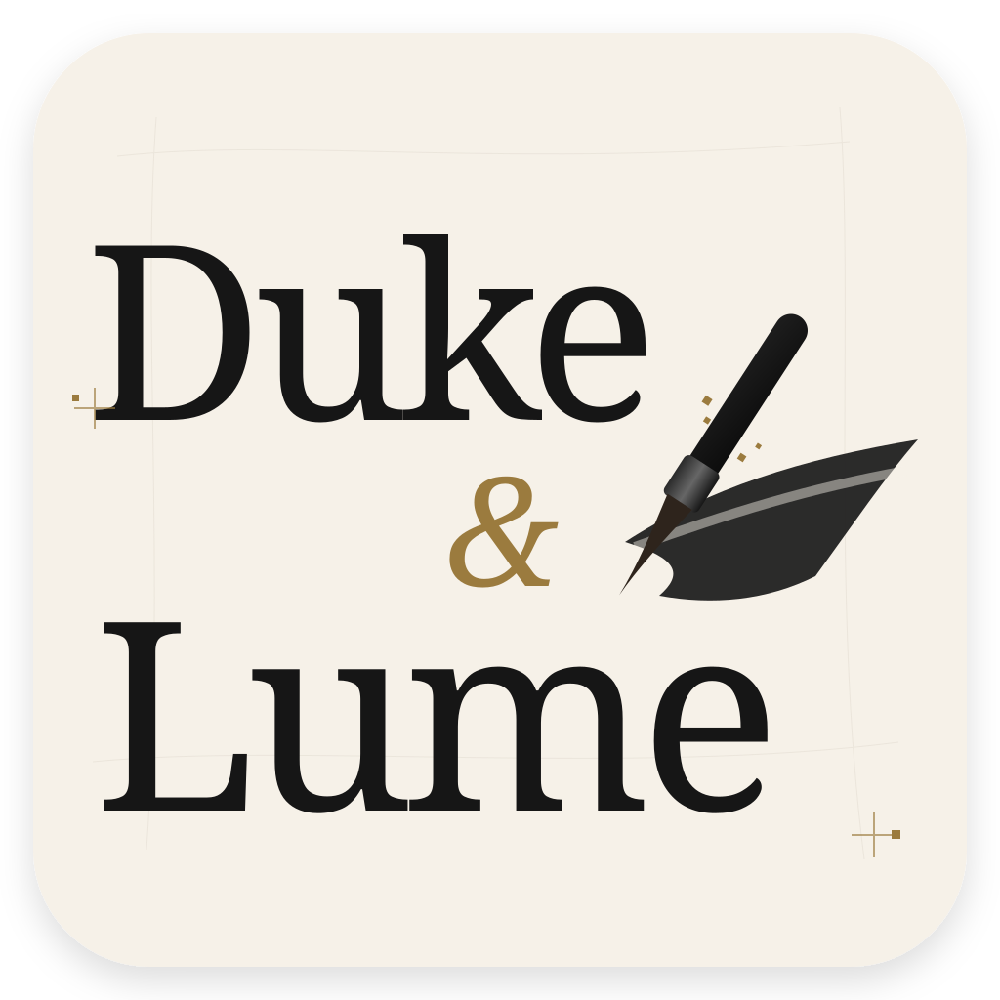
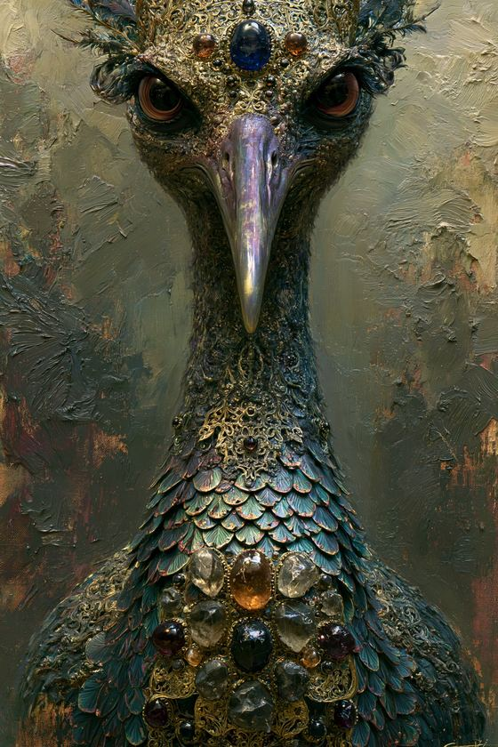
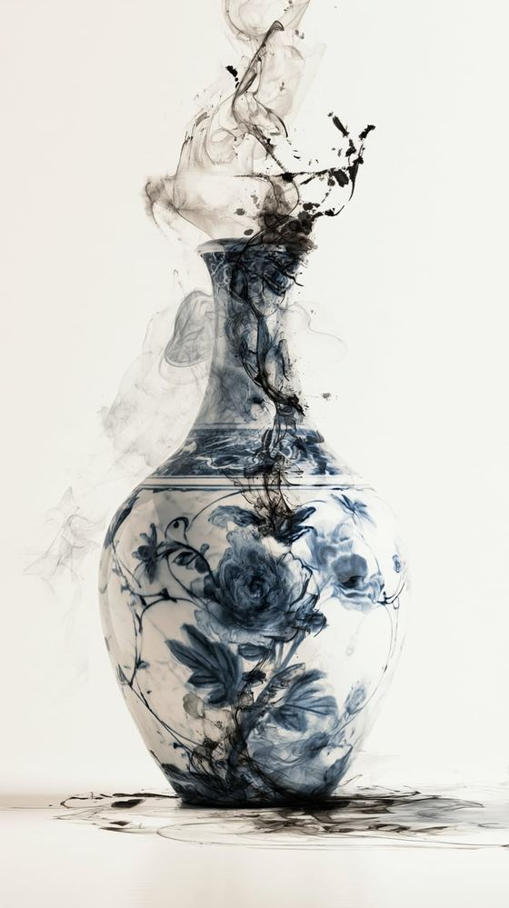
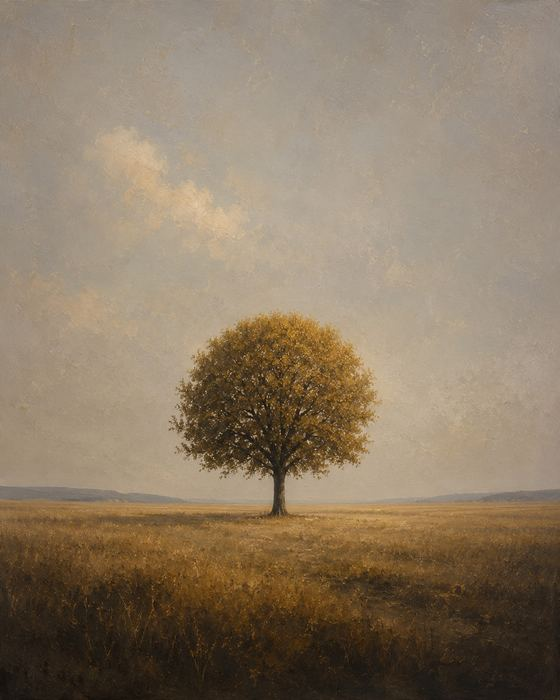

Mineral Forms
Stone, crystal and metal studied as if they were living things.

Digital art gallery
The one brand in this house that isn’t a technology venture. Duke&Lume is a body of original digital painting — 49 works across eight curated collections — and a museum-quiet room built for the single purpose of getting out of their way.
Most places that show art online are shops with a gallery attached, or feeds that reduce a painting to a thumbnail between two advertisements. Duke&Lume is the opposite proposition: a warm milky room, large serif type, an asymmetric editorial grid, and motion slow enough that you stop noticing it. Nothing on the page competes with what is hanging on it.
The works themselves are digital paintings — jewelled birds, dissolving porcelain, rooms furnished for someone who never arrives — built up in heavy digital oil and worked over by hand at full size. They are grouped into eight collections, each one an argument rather than a folder.
“We do not paint objects. We paint impossible memories.”
It sits in the Rasveda Labs portfolio under its own heading for a reason. The rest of the house is measured in shipped features, test counts and honest status badges. This one is measured by whether the work is any good — and the engineering exists only to make sure nothing gets in the way of that judgement.
Every work carries a museum label: title, year, collection, and the one line the artist would say about it standing next to it.

Authority without a throne.

A vase caught mid-dissolution, its roses drifting into ink.

One tree, keeping the whole plain.
Shown here at portfolio scale. In the gallery each work opens to a fullscreen viewer with zoom, pan, swipe and keyboard control, and every image is served with a generated low-quality placeholder so the layout never jumps while it loads.
A collection is curated, numbered and introduced — not a tag. Works move between them and collections are dissolved when they stop earning their place.
Stone, crystal and metal studied as if they were living things.
Growth, decay and organic form — the precious detail found in nature.
Portraits of imagined beings, crowned in gold and quiet authority.
Rooms that never existed, furnished and left unoccupied.
Portraits of character — faces met, imagined or remembered.
Husks, pods and petals cradling a gemstone heart — vessels made to keep something.
Objects arranged to carry an argument — old symbols painted plainly.
Ordinary places under one impossible condition, photographed straight.
The point of the architecture is that hanging a new work never touches a component. Every artwork is a typed entry in a content layer whose shape deliberately mirrors the CMS schema it will migrate to, so the site can move to a real editor later without being redesigned around it.
Works, collections and site copy live in src/content as typed
entries; the front end only reads. Adding a work is a file in a folder and
one object — image, dimensions, alt text, collection, where it hangs.
Until an image file exists, an entry renders as a composed tonal panel drawn from its own colour pair. A half-finished collection looks deliberate rather than broken.
The model already carries edition, print and price fields for a future commerce stage. The artwork page prints only what has actually been decided — no invented edition size, no placeholder price.
Inquiries send through Resend. With no key configured the contact form says so plainly and hands over the email address, rather than pretending to have sent something.
Warm milky paper, near-black ink and a single muted bronze used only for marks
and rules. Display type is Cormorant Garamond — chosen after
Instrument Serif, which was narrow enough to read as vertically stretched at
display size — with Inter underneath it. Corners stay square.
One easing curve governs every transition, and all of it stands down under
prefers-reduced-motion.
Next.js 15 (App Router) on React 19 and TypeScript, styled with Tailwind v4 tokens declared once in a single theme block. Framer Motion and view transitions handle the quiet movement between pages. Every route is built — home, gallery with URL-synced Exhibition and Archive filters, collections and collection pages, artwork pages with a fullscreen viewer, About, and a working contact form — plus robots, sitemap and a manifest. Vitest covers the content model, Playwright walks the desktop and 320-pixel journeys, and one command runs typecheck, lint, tests and build together.
Every page exists and every page is filled with real work — 49 paintings across eight collections, no placeholder copy anywhere. The gallery is a finished object waiting on its own opening night.
Duke&Lume is the art house of Rasveda Labs. For acquisitions, exhibitions or commissions, the door is the same one.